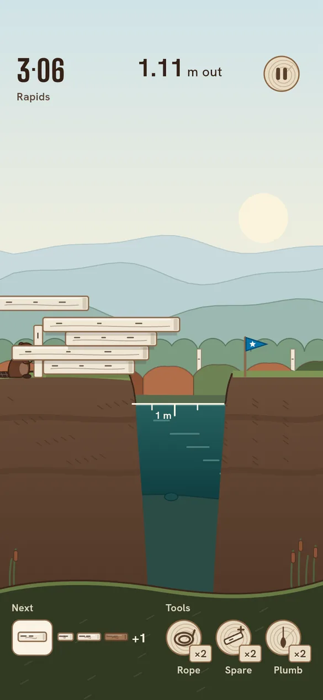
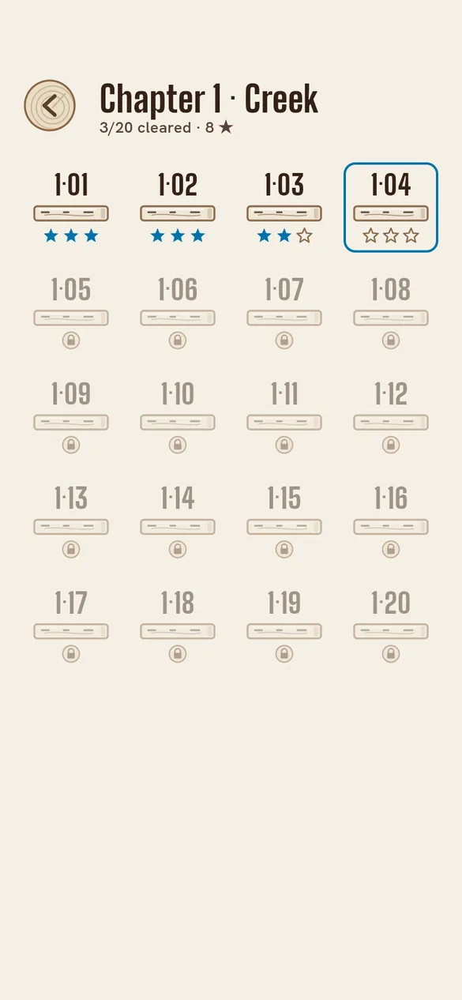

Tap. Lean. Keep it standing.
Tap to drop the sliding plank. Each plank rests on the one below, and the stack holds as long as the weight above every plank still sits over it.
Pass the stakes in the river for stars, and tap Done when you are happy with the reach.


Balance, not timing
A clean drop is not the goal. Lean the top planks far out and keep the bottom ones back over the bank: the stack holds only while its weight rests on what lies below.
Sixty levels, three rivers
Creek teaches the lean. Millpond brings long planks, short ones, oak beams and stones. Rapids asks you to span the river to the far bank. Free Reach is an endless river where your best reach is the score.
Tools for a near miss
Rope takes back the last drop, a Spare Plank adds one more, and the Plumb Line shows where each layer balances.
What it costs
Creek (20 levels) and Free Reach are free. Far Banks opens Millpond and Rapids (40 levels) with one purchase of $3.99. A Lumber Cart of tools costs $0.99, and tools are also found on the bank the first time you clear certain levels. No ads, ever.
Questions
- Are there ads or tracking?
- No. No ads, no analytics, no account. Your progress stays on your device.
- Do I need to buy anything?
- No. Creek and Free Reach are free, and you can earn tools by playing.
- I bought Far Banks before. How do I get it back?
- Open Settings → Restore purchases in the game, signed in with the same App Store account.
- Which devices?
- iPhone with iOS 15 or later.